Ook buiten mijn werk vind ik het leuk om dingen te maken, uit te proberen en steeds een beetje beter te krijgen. Twee liefhebberijen komen daarbij telkens terug: bakken en barbecueën.
Mijn belangstelling voor bakken gaat een behoorlijk eind terug. Ik volgde de opleiding brood en banket aan de SKB in Eindhoven en heb ook daadwerkelijk in een bakkerij gewerkt.
Tegenwoordig bak ik vooral voor mijn plezier. Gebak, taarten, brood en af en toe een klassieker waarvan ik wil weten of ik hem nog steeds in de vingers heb.
Goede grondstoffen, nauwkeurig werken en begrijpen waarom iets lukt of juist niet. En soms betekent dat gewoon opnieuw beginnen totdat het wél klopt.
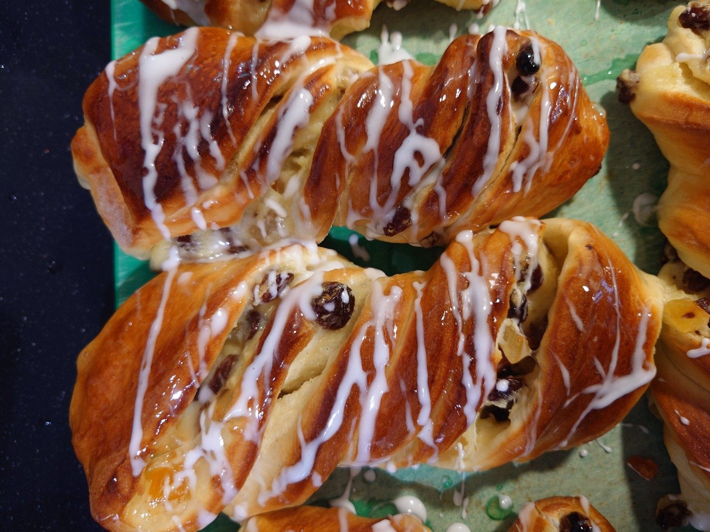
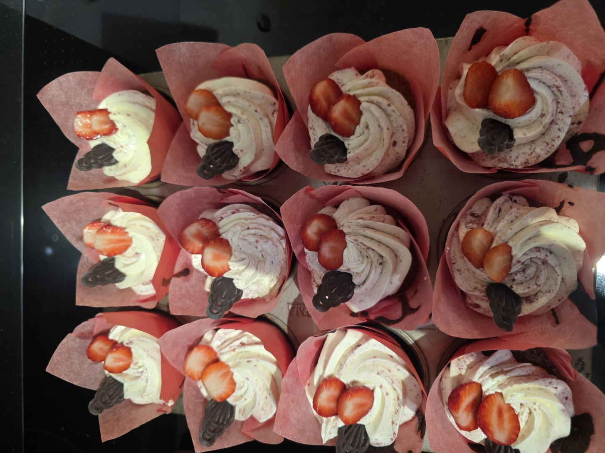
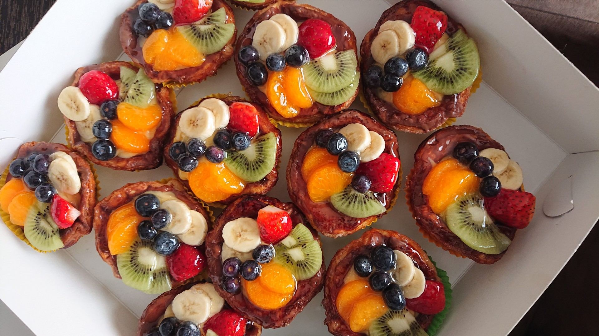
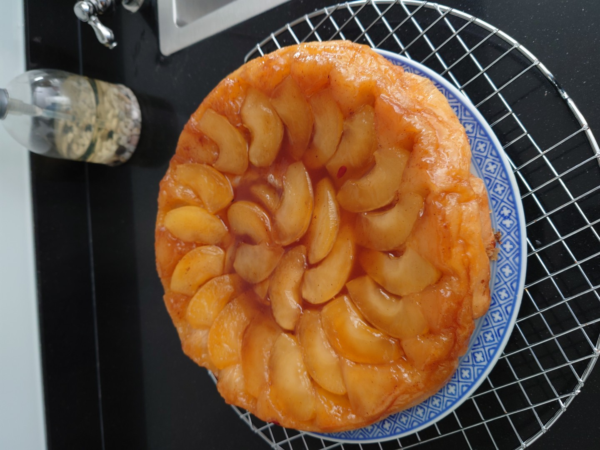
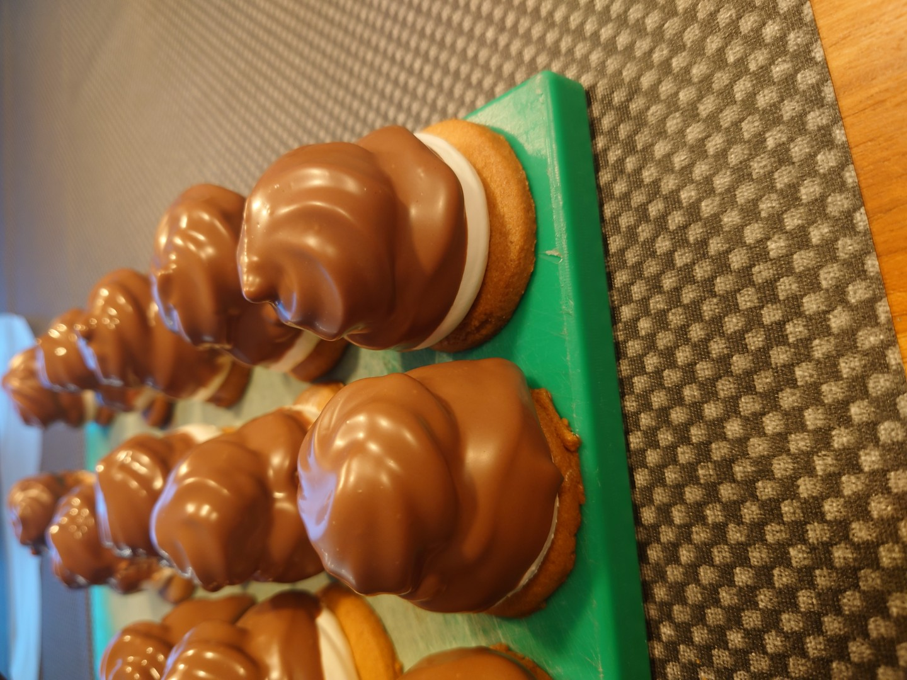
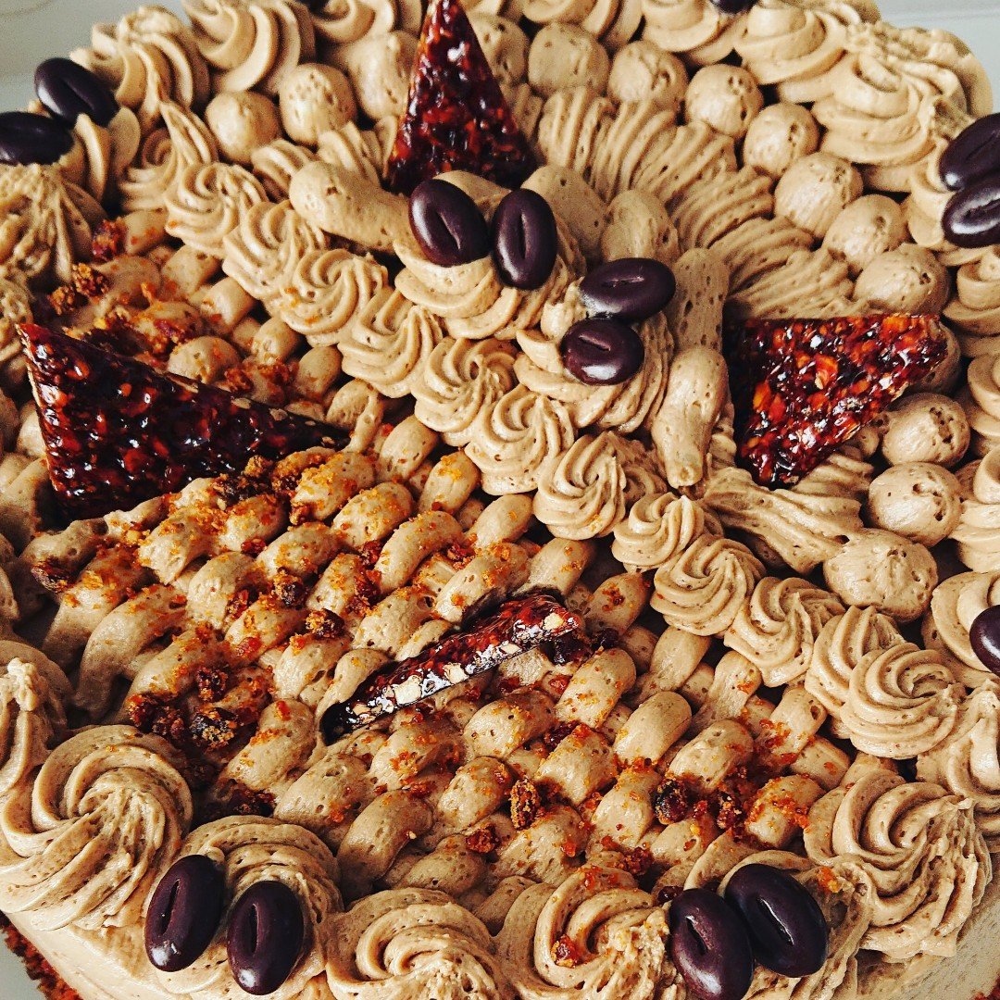
Barbecueën betekent voor mij iets anders dan een paar hamburgers boven hete kolen leggen. Ik vind vooral het proces leuk. Low & slow, werken met rook, verschillende bereidingen proberen en ondertussen goed in de gaten houden wat temperatuur en tijd met een product doen.
Je kunt alles vooraf bedenken, maar uiteindelijk bepaalt wat er op dat moment gebeurt wat je moet doen. Soms moet de temperatuur omhoog, soms juist omlaag en soms moet je vooral geduld hebben.
En het mooiste moment? Als alles uiteindelijk op tafel staat.
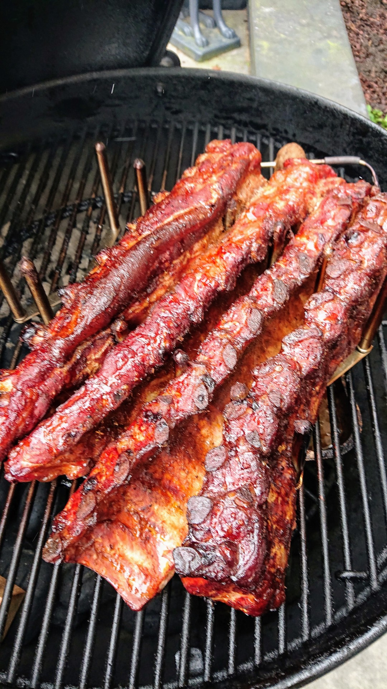
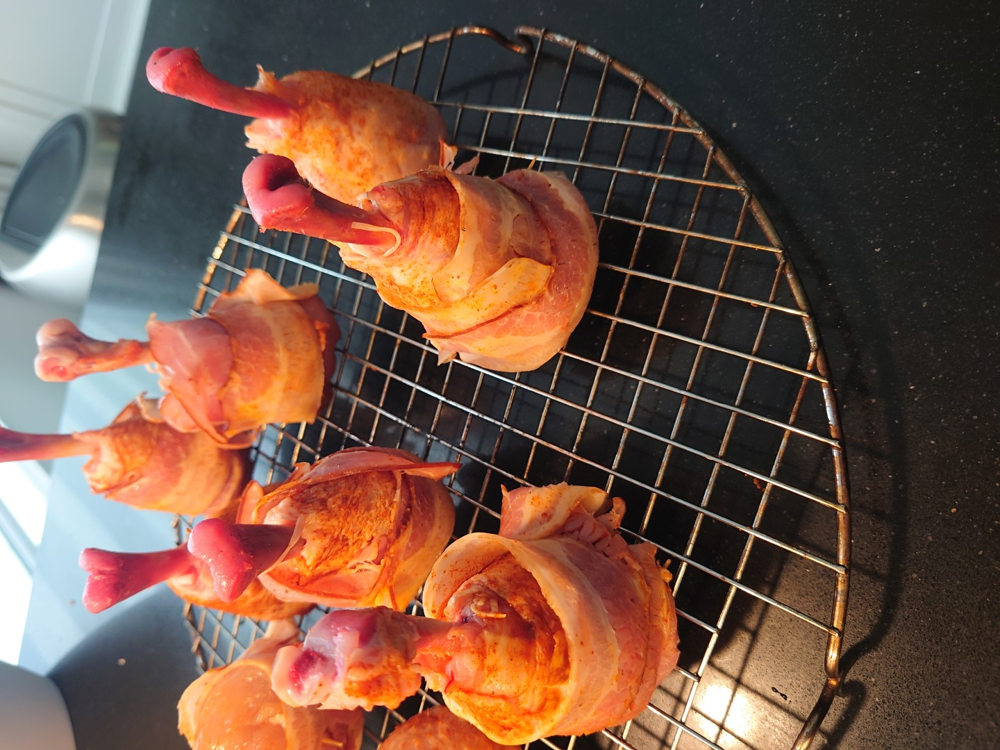
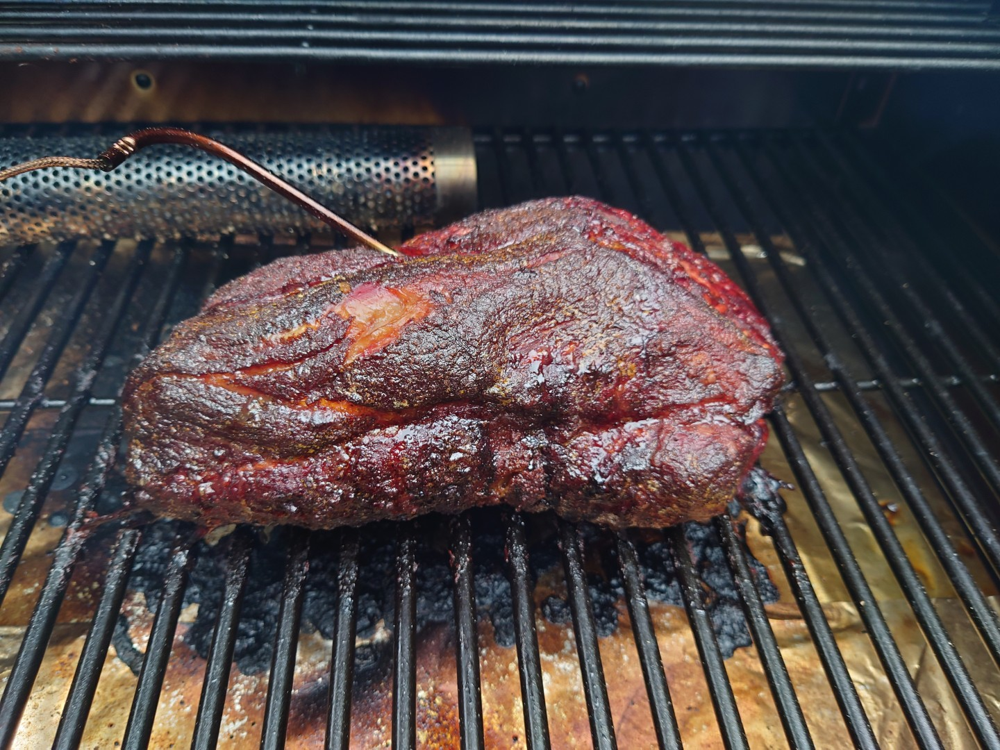
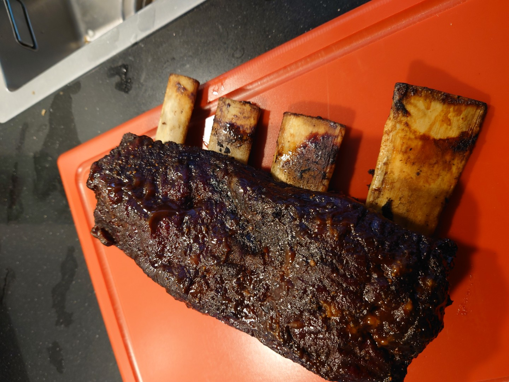
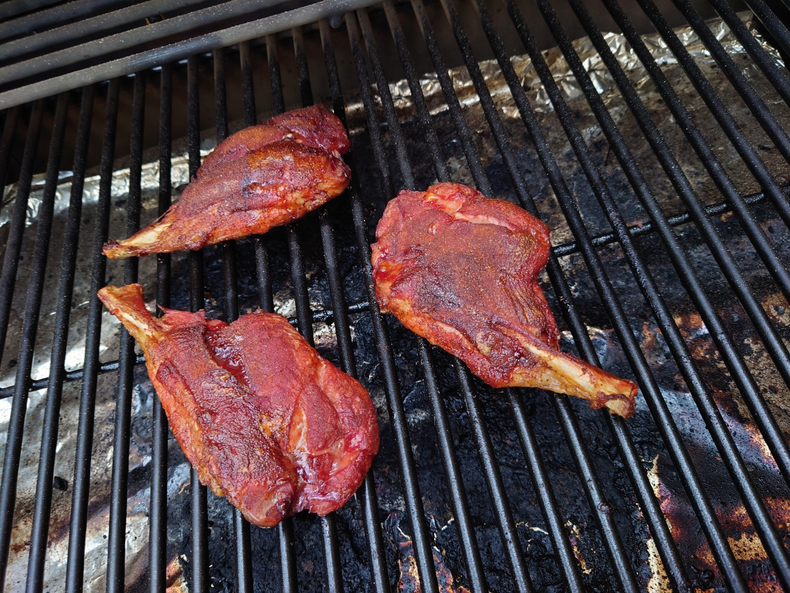
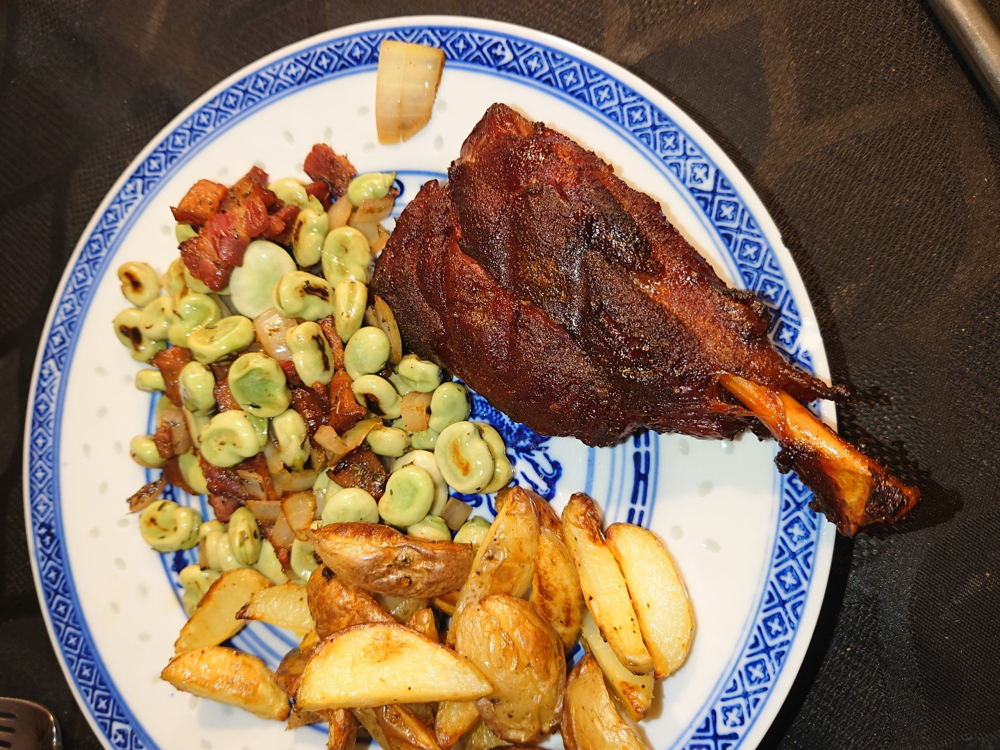
Sommige recepten verdwijnen wanneer degene die ze altijd maakte er niet meer is. Dat heb ik zelf ervaren.
Daarom wil ik recepten die voor mij de moeite waard zijn vastleggen. Niet alleen de ingrediënten en de bereidingswijze, maar juist ook de kleine dingen die vaak niet worden opgeschreven. Hoe iets moet voelen, wanneer het goed is en waarom het thuis altijd nét zo werd gemaakt.
Voor mezelf, voor mijn kinderen en voor iedereen die ze graag maakt.
Recepten op Eigenwijers · binnenkort